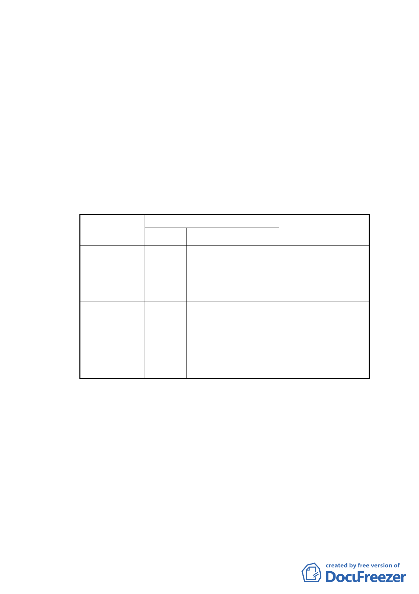

為 8,687 ㎡。
（二） 計畫區現況：所在街廓現況皆未開闢；計畫區東側為國中
用地，現況為美國在台協會，南側緊鄰大安國宅；周邊文
教及宗教設施豐富，包含師大附中、大安高工、台北市立
圖書館、聖家堂……等。產權部分其中大安區瑞安段一小
段 219-1 地號等土地，多為私人所有，共 8080 ㎡，其餘土
地則為中華民國所有，管理機關分別為財政部國有財產局
及臺北市政府工務局新建工程處，共計 607 ㎡。
（三） 變更計畫內容：
1.變更土地使用分區：
位置
原計畫
臨建國南路超
過 30 公尺進深
範圍
臨建國南路 30
公尺進深範圍
第 3 種住
宅區
第 3-2 種
住宅區
建國南路二段
39 巷及 69 巷間
東西向 6 公尺寬
道路
道路用地
變更內容
新計畫
第 3 種住宅
區(特)
第 3-2 種住
宅區(特)
綠地用地
面積(㎡)
5,624
2,456
607
變更理由
配合整體開發計畫，變
更原計畫內容
為兼顧擴大整體開放
空間效益及確保原細
部計畫道路通透性，將
道路用地調整為綠地
用地，落實以人為本之
理念，增添公益性與地
區景觀的多樣性。
2.土地使用分區管制：
（1）使用強度與項目：分別適用「臺北市土地使用分區管制規則」
有關第三種住宅區及第三之二種住宅區之規定。
（2）為增進本計畫區內跨街廓之整合開發與利用，整體開發街廓
建蔽率、容積率及使用可彈性配置於街廓內。廣場用地經臺
北市政府同意後，其上方或下方得供設置立體連通設施使
用。
（3）本案建築基地得適用「徵求參與『促進都市再生 2010 年臺
北好好看』開發計畫案」四項容積獎勵(廣場式開放空間、
-3-